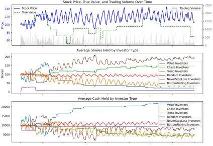
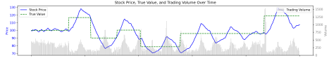
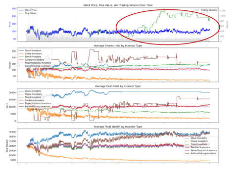
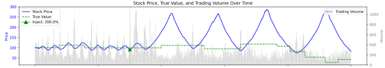
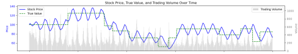

The game of the stock market
More than ten years ago, after reading a book (titled "The Psychology of Finance "), I was thinking about a question. Since the price fluctuations of the stock market are formed by the behavior of stock market participants (investors), can we use computers to simulate the behavior of these participants to simulate the stock market? After that, this idea has never been forgotten. It appears in my mind from time to time, but the specific way to do it has never been formed. In addition, I feel that the workload is too large and the code development is a bit complicated. Until recently ... , the emergence of AIGC has enabled a person to become a team, allowing me to quickly turn ideas into code, thereby turning projects into reality. Let's start our game - building our model:
I. Market Participants
Market participants can be classified according to many dimensions, such as by investment cycle, short-term, medium-term, and long-term investors. They can be divided into retail investors (individual investors), large investors (high net worth individuals), and institutional investors according to the size of their funds. We can also classify them by investment style, such as value investors, growth investors, trend investors, and contrarian investors. According to trading strategies, there are technical analysts, fundamental analysts, quantitative traders, and so on. There are many, many more.
For the convenience of simulation, we will first simplify investors in the market into four categories from the perspective of user behavior: value investors, trend investors, up-and-down investors, and random investors. These four types of investors do exist in the actual market, and it is important that we can accurately describe their behavior with code. Of course, these four types of investors alone cannot represent all investors in the real stock market. As our simulation progresses, we can introduce more investors with certain behavioral characteristics into the simulation to observe the changes in their own assets and their impact on the market.
Let's set up the investment behaviors of four types of investors respectively:
1. Rational value investors: They trade based solely on their own estimates of the intrinsic value of stocks. They have the following behavioral characteristics:
i. Sell when the market price is higher than the valuation, and buy when the market price is lower than the valuation
ii. Trading volume is proportional to the degree of price deviation (percentage);
iii. We assume that stocks have a real value, which will change randomly in the form of square waves from time to time, thereby simulating the impact of a certain event on the value of individual stocks (such as favorable or unfavorable information in the real market).
iv. Assuming that every value investor can always make a relatively correct judgment on the company, the valuation will be normally distributed around the true value of the stock (the standard deviation can be set as a proportion of the true value, such as 10% ), and the average of the valuations of all value investors is equal to the true value.
2. Trend investors: Trend investors are also a common group. We assume that they have the following behavioral characteristics:
i. For simplicity, we use the moving average ( MA ) as a trading signal. When the price crosses above the MA , we buy all the stocks, and when it crosses below the MA , we sell all the stocks.
ii. The MA period ofeach trend investor is randomly selected from [5, 10, 15, 20, 25, 30, 60, 120] , and different investors use different observation periods.
3. Random traders: Most of the retail investors may be such a group. They have no or no trading strategies or trading principles. They may buy or sell according to their intuition. They may do this sometimes and that sometimes when they encounter the same situation. But they activate and prosper the market.
4. Buyers who chase ups and sell downs: Buyers who chase ups and sell downs are also a term often heard in the stock market. The faster or higher the stock price rises, the more excited these investors are, and the more they are tempted to buy; and when the stock price falls, the faster or lower it falls, the more fearful they are, and they sell the stock quickly. Here we set it like this: Buyers who chase ups and sell downs observe the stock price rise and fall speed within a certain period (such as 3 days, 5 days ... ), and the proportion of buying and selling is proportional to the rise and fall speed.
Next, we refer to the actual situation of the real stock market to determine the rules of market transactions. For the sake of simplicity, we ignore intraday transactions, so the call auction mechanism is as follows (the stock market closes every day and the call auction ends):
1. Collect all investors’ buy and sell orders;
2. Sort the orders by price;
3. Find the price that can generate the largest trading volume as the clearing price;
4. Execute transactions based on the price priority principle.
At this point, we have completed the market rules and the four market participants, and converted these settings into code (see the program: main_ca_3.0.4.py ). After setting different parameters and running, we can get the output shown in Figures 1 and 2. In order to observe the operation of the market, we added 5 sub-graphs: Sub-graph 1 is the change of stock price with trading days and the trading volume at the bottom; Sub-graph 2 is the change of the average number of positions held by different participants; Sub-graph 3 is the change of the average cash held by different participants; Sub-graph 4 is the change of the average assets of different participants; Sub-graph 5 shows the change of the assets of trend investors with different MA cycles over time.
By setting different parameters, we can see different operating results. Through repeated simulations, we can initially observe the following phenomena:
1. From the beginning of the test, the stock price will basically fluctuate around the real value of the stock in the short and medium term (similar to what is described in the textbook); but when the simulation time is extended, the stock price and the real value may sometimes be separated (we will show and analyze it later). In the words of Graham, the father of value investing: " In the short term, the stock market is a voting machine; but in the long term, it is a weighing machine. "
2. If the real value of a stock changes suddenly, the stock price will also change accordingly;
3. The stock price fluctuations show obvious periodic oscillations, and the observed fluctuation cycle is about 25-30 days;
4. Compared with other investors, value investors will have better and more stable returns;
5. The assets of those who chase rising prices and sell falling prices will slowly disappear over time;
6. The asset changes of trend investors and random investors are similar;
7. No matter which cycle the trend investors use, the asset changes are not much different;
If you are interested, you can download the project program ( main_ca_3.0.4.py ) to observe the operation.
Fig.1
Fig.2
II. Market Participants
In the previous chapter, we took the first step and built a stock market model with four types of investors and implemented simulated trading. In the output results, we can see the simulated stock market fluctuations. In this chapter, we will discuss the role of the four participants in the stock market. For this purpose, I updated the program ( main_ca_3.0.5.py ). In this version, each investor can set different numbers, different initial holdings and fund status.
Let's first look at the situation where all four types of investors exist in the market. The number of each type of investor is set to 100 , the initial holding is 100 shares, and the initial capital is 10,000 yuan. The test period is 1,000 days. The market value random number seed is set to 2100 .
Fig.3
The second case is the lack of value investors (the number of value investors is set to 0 ). Small pointed top and big round bottom, does it look familiar?
Fig.4
The third situation is the lack of people who buy high and sell low ( the number of people who buy high and sell low is set to 0 ).
Fig.5
The fourth type is the situation where there is a lack of trend investors ( the number of trend investors is set to 0 ).
Fig.6
The fifth is the case where there is a lack of random traders (the number of random traders is set to 0 ).
Fig.7 (Note: The market value random number seed is set to 2100 )
Fig.8 (Note: The market value random number seed is set to 3100 )
Haha, looking at Figures 7 and 8, it seems that a market without retail investors (random investors) cannot be played, and it is a market without vitality. We tested other combinations without random investors, and the situation is the same. Can we draw a conclusion that retail investors are a necessary guarantee for maintaining the normal operation of the stock market?
The fifth type is the case where there are only value investors and random traders (the number of the other two types of investors is set to 0 ).
Fig.9
The sixth type is the situation where there are only investors who chase ups and downs and random traders (the number of the other two types of investors is set to 0 ). It is another small peak and a large round bottom.
Fig.10
The seventh is the situation where there are only trend investors and random traders (the number of the other two types of investors is set to 0 ).
Fig.11
Through the above simulation observations, we have obtained some preliminary conclusions:
1. Value investors are the cornerstone of the stock market and serve as a stabilizing anchor ;
2. Those who chase rising and falling prices will amplify market fluctuations. Due to their existence, the stock market may develop in an extreme direction. They are synonymous with greed and fear;
3. Trend investors have relatively weak influence on the market;
4. Random traders are a necessary component of the market and will maintain the normal and healthy development of the stock market.
III. A wider variety of market participants
In main_ca_3.0.7.py , we added "Never Stop Loss Investors", which is a group that is common in the actual market. They hate losses. They may buy stocks at any time. When the stock price rises, they will sell after making a profit. But when there is a floating loss, they will not sell, but hold on until the stock returns to the purchase price. During the process of holding on , they often say: "As long as the stock price rises back, I will sell it immediately and never buy stocks again." In the program, we set it like this:
1. Buying strategy:
- When not holding a position, there is a certain probability (default 5% ) to buy a full position
- When buying, an order will beplaced at a price slightly higher than the current price ( 1.01 times) to increase the probability of a transaction
2. Position management: Once you buy, if the stock price is lower than the purchase price (i.e. floating loss), you will keep holding it without stopping the loss. You can completely rely on holding stocks and waiting to cope with losses.
3. Selling strategy:
- Only consider selling when the stock price rises above the purchase price
- When the stock price is in the profit range ( 5%-50% ), there is a certain probability (default 50% ) to sell
Fig.12
Figure 12 shows the operation of the market simulation with the addition of "Never Stop Loss Investors" (Note: the number of investors and the initial settings of funds in the above simulation are different). In this figure, we can observe some phenomena:
1. Under normal circumstances, stock prices fluctuate around the real value of the stock; when the real value changes, the stock price will follow the real value.
2. In some cases (in the red box), the price fluctuates more significantly. It is speculated that the occurrence of this phenomenon should be related to the dominant force in the market: from the original dominance of value investors to the dominance of those who chase ups and downs. According to simulation observations, after the value investors run out of funds or clear their stocks, the market environment does not meet the trading conditions of value investors, and they cannot participate in market transactions. At this time, other forces in the market will play a dominant role, and the change pattern of stock prices will be different from before.
3. In this simulated market, value investors and trend traders have a greater chance of outperforming other investors, and the returns for value investors are more obvious.
In main_ca_3.0.8.py , we added another common group of traders in the market - "bottom-picking traders". We assume that this type of traders has the following operating strategies:
1. Buying strategy:
- The observation period is 100 days, and sufficient price history data is required
- Calculate the decline from the highest in 100 days
- When the decline exceeds a certain percentage (randomly set between 5%-15% ), start considering buying
- The buy volume is increased in a step-by-step manner: the number of step_drops (randomly set between 5%-15% ) is calculated. The deeper the drop, the higher the buy ratio;
- The single purchase ratio starts from 10% , and increases by 10% for each step down
- Maximum cash usage: 80%
2. Selling strategy:
- When holding stocks and the current price relative to the average cost reaches the profit target (randomly set between 10%-50% ), adopt a full-position selling strategy.

Fig.13
The running results are shown in Figure 13. Bottom-picking investors seem to have better returns. Figure 14 below is a simulation run without bottom-picking traders under the same parameters. We found that the addition of bottom-picking investors weakened the phenomenon of "stock prices fluctuating around the real value of stocks". After multiple simulations, we seem to be able to draw a preliminary conclusion: the greater the proportion of bottom-picking investors, the lower the correlation between stock prices and real value.
Fig.14
We have introduced two types of investors above. You can also add more different types of investors according to your own ideas and simulate the impact of these investors on the market, as well as the changes and fluctuations of the investors' own assets.
IV. Formation and Causes of Fluctuation
Looking back at the simulations we did earlier, we can observe significant volatility, which we will discuss in this section.
1. The impact of market participants on volatility
To simplify the analysis, we return to the market with only four investors ( main_ca_3.0.5.py ). After running, we can observe volatility. Through the previous simulation, we see the following phenomena (using default parameters):
- Generally, we can observe a fluctuation cycle of 25-30 days (as shown in Figures 1 and 2 )
- When value investors reduce their market participation, larger and stronger market fluctuations will occur (longer cycles and larger volatility).
- In extreme cases (as shown in Figure 4 ), when value investment participation is completely lost, long-term huge fluctuations will occur, with a cycle of up to 300 days, and the high point of the oscillation amplitude reaching 2.5-3 times the initial price, and the low point reaching 30-50% of the initial price .
2. The impact of investor behavior parameters on volatility:
- The size of the valuation differences among value investors:
Under normal market conditions, 95 % of the institutions’ valuations typically fall within a range of 15%-50% above or below the median , depending on the type of stock and market volatility:
* Stable assets: 15%-25% ;
* Growth assets: 30%-50% ;
* High- risk assets: 60%+ .
Note: The above information is queried via grok 3, and the accuracy of the data is yet to be determined.
Figure 15 shows the impact of different standard deviations of the value investor’s valuation error ( estimation_error ) on volatility. From top to bottom, they are: 0.1 , 0.25 , 0.5 , and there are obvious differences in the cycle and volatility.
Fig.15
- Observation period for those who chase ups and downs:
Figure 16 shows the impact of different observation period settings on volatility for those who chase ups and downs. From top to bottom, there are three cases: 3 , 10 , and 20. The periods are significantly different, while the volatility remains basically unchanged.

Fig.16
3. Changes of volatility over time:
When we extend the trading time (to 8,000 trading days), as shown in the red circle in Figure 17 , the fluctuation pattern of the stock price will change: the stock price no longer changes with the change of the real value, the periodicity of the fluctuation becomes weaker, and the fluctuation range becomes smaller. The reason should be attributed to the following: because those who chase the rise and sell the fall, their assets (including holdings and cash) will be gradually consumed over time, and the impact on the market price will gradually decrease. At this time, even if the real value of the stock rises or falls sharply, it is difficult for the stock price to follow the real value, and it becomes lifeless.

Fig.17
As for other factors that affect the frequency and amplitude of fluctuations, you can also use the program to conduct further tests.
V. Market Funds
We all know that funds play a very important role in the stock market. We will explore this issue in this section. main_ca_3.1.0.py adds a function, which is the fund injection and withdrawal function. We can observe the changes in the market when funds are injected or withdrawn from the market. The program supports injecting or withdrawing funds for investors on a specified date, and can operate for specific types or all investors, and can adjust funds by fixed amount or proportion.
Let's take a look at the performance of the market over 1,000 trading days after injecting different amounts of funds, with other conditions being the same (the random number seed setting for the value curve: value_line_seed = 2076 ):
Scenario 1 : No capital injection
Fig.18
Scenario 2 : 20% of all investors’ funds are injected on the 300th day
Fig.19
Scenario 3 : 50% of all investors are injected on day 300. Note the large change at the tail.
Fig . 20
Scenario 4 : 100% funding for all investors on the 300th day .
Fig.21
Scenario 5 : On the 300th day, 120% of funds are injected into all investors .
Fig . 22
Scenario 6 : 150% injection of funds for all investors on the 300th day
Fig.23
Scenario 7 : 200% injection of funds for all investors on the 300th day

Fig.24
Scenario 8 : 250% injection of funds for all investors on the 300th day
Fig.25
Scenario 9 : On the 300th day, only 230% of funds were injected into the market for those who chased the rise and fell.
Fig.26
Next, let's take a look at the market's performance over 1,000 trading days after different amounts of funds were drawn, with other conditions being the same (the value curve's random number seed setting: value_line_seed = 2076 ):
Scenario 1 : 20% of all traders’ funds are taken on the 300th day
Fig . 27
Scenario 2 : Take 50% of all traders’ funds on day 300
Fig.28
Scenario 3 : 50% of all traders’ funds are withdrawn on the 300th day
Fig.29
Scenario 4 : 65% of all traders’ funds are taken away on day 300
Fig.30
After repeated tests and observations, my guess is that whether the stock market can fluctuate stably around the value line is more closely related to the financial balance between market participants, rather than just the amount of funds .
As we all know, commissions, stamp duties and other fees charged in transactions are transaction costs for investors, and are one of the factors that affect the market, affecting the long-term returns of individual investors, especially for high-frequency traders. However, from the perspective of the entire market, from this model, the impact on stock market fluctuations is not significant. It may be that the psychological impact is greater than the actual impact. The following two figures compare the short-term and long-term respectively. In each pair of figures, the buying cost of the upper figure is set at 0.1% and the selling cost is set at 0.2% ; the buying cost of the lower figure is set at 1% and the selling cost is set at 2% . It is assumed that these transaction costs are fair to the participants and will not destroy the balance relationship on the capital side .

Fig.31
Fig.32
VI. Information Transmission and Message Investors
There are all kinds of news in the market, both good and bad news. These news will affect the value of stocks, causing people to re-evaluate stocks, which in turn affects stock trends. Some investors pay close attention to these news, while others don't care at all. Some get the news in advance through internal channels, some get it from public channels afterwards, and some have no way of knowing. Of course, some news are true and some are false. Some people are deceived, while others use news to control stock prices.
In this model, we can regard the change of real value as good or bad news. Assuming that there are investors who use information to trade, and news investors use public information to trade, we have made the following settings in the program :
- Timing of information acquisition: The direction of change will be known 1-5 days after the actual value of the stock changes .
- Trading direction: Buy all positions when the value rises, and sell all positions when the value falls.
- Position holding strategy: hold the position after purchase until 15% floating profit, 20% floating loss or sell after 30 days (these parameters are adjustable).
After running main_ca_3.2.1.1.py , you can see the market performance of news investors :
Fig.33
VII. Summary
So far, we seem to have a relatively complete trading simulation system. In this simulation system:
1. Based on the behavioral characteristics of traders, we have added several types of investors, including: value investors, trend investors, up-and-down investors, random investors, never-stop-loss investors, bottom-picking investors, and news investors.
2. In terms of trading, we only used a call auction to simulate daily trading, generate price sequences and trading volume sequences, and observe market changes.
3. From the output of the simulation results, we can observe the fluctuations in stock prices and trading volumes, as well as the average changes in assets, cash, and holdings of each type of investor.
4. We have added the function of injecting or withdrawing funds into the market, and added the transaction fee information, so that we can observe the impact of overall market capital changes on transactions.
The above model is built on the basis of my hobby of exploring the laws of market operation and my superficial understanding of economic theory. It seems to reflect the laws of the market to a certain extent. Some of them fit the market phenomena, while others do not. It seems that some laws can be summarized, but they are a bit specious. In view of my limited academic ability and limited cognition, the model is too simplified and has too many assumptions based on daily experience. Therefore, the model can only be regarded as an interesting experimental game. In addition, my programming ability is also relatively limited. Perhaps a flaw in a code may overturn all the conclusions. The number of running tests of this model under various conditions is not enough, and there is not enough data to summarize. Some of the conclusions involved in the article can only be called conjectures, which may not be enough to fully explain and understand the market. Therefore, I open source the various evolutionary code versions here for like-minded people to play with and improve together.
Yichong (Julian72cn@hotmail.com)
Completed on May 1 , 2025